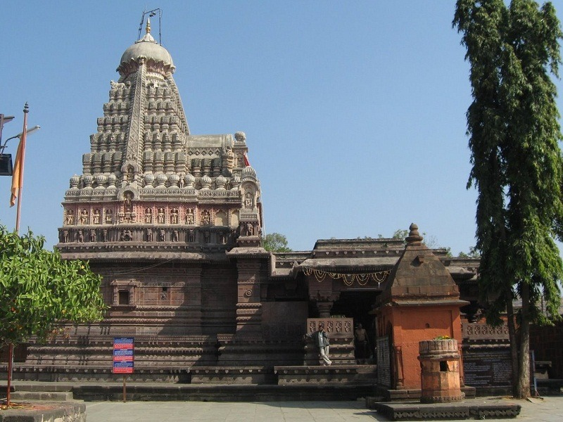
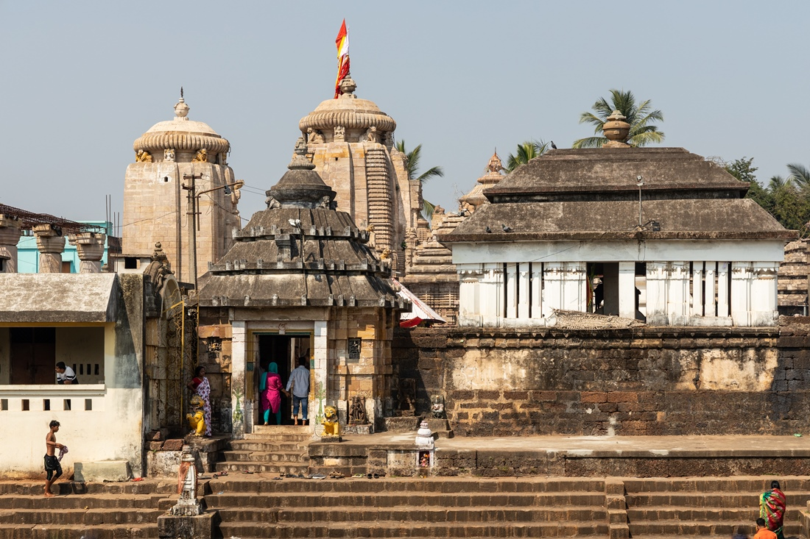

Ghrushneshwar Joytirlinga Temple
Grishneshwar temple, Aurangabad Overview
A UNESCO World Heritage Site, Grishneshwar Temple located in Ellora is one of the 12 Jyotirlingas in
India. Also known as Ghrneshwar or Dhushmeshwar Temple, this Jyotirlinga in Aurangabad is dedicated
to Lord Shiva and is considered an important pilgrimage site. Grishneshwar is the smallest of the
Jyotirlingas and is considered the last or the 12th Jyotirlinga of India.

Kopeshwar Temple
Located in Khidrapur in Kolhapur district at the junction of Maharashtra
and Karnataka, Kopeshwar Temple is dedicated to Lord Shiva. Built on the banks of River Krishna, the
shrine boasts of a beautiful architecture with various intricate carvings on the interior and
exterior walls. Besides, it also has idols of Lord Shiva, Vishnu, Brahma among others.

Siddhivinayak Temple
The Siddhivinayak Temple in the Prabhadevi area is a revered shrine
dedicated to Lord Ganesha and is one of the most significant and frequented temples in Mumbai. This
temple was built in the year 1801 by Laxman Vithu and Deubai Patil. The couple did not have any
children of their own and decided to build the Siddhivinayak temple so as to fulfil the wishes of
other infertile women.

Akshardham Temple
Swaminarayan Temple or Akshardham Temple is located on the Ring Road in Nagpur. The newly
constructed temple is facilitated with a huge kitchen, parking, a restaurant and a kids play area.
It is advised to visit the temple after 4 in the evening owing to its impressive lighting and decor.
The temple is spread over two floors and boasts of a striking architecture.

Kapileshwara Temple
One of the oldest instances of this pilgrim city, this is a Shiva temple
surrounded by a hint of mystery due to the absence of a statue of Nandi Bull, usually found in all
Shiva Temples. Close to the Kalaram temple, this is one of the most frequented temples in the city.

Trimbakeshwar
T rimbakeshwar Temple is one of the twelve Jyotirlingas in India. Located in Trimbak, 28 kilometres
from Nashik city, this Shaiva temple is found at the foot of Brahmagiri Hills. Established by the
Maratha ruler, Peshwa Nana Saheb in the 18th century, the temple is mentioned in the powerful
Mrityunjaya Mantra that bestows immortality and longevity.
Saptashrungi
Saptashrungi is a Hindu pilgrimage spot located around 60 km from Nasik.
The temple of the goddess Saptashrungi Nivasin is also the half 'Shaktipeeth' of the three and a
half Shaktipeeths located in Maharashtra. It is believed that one of the limbs of the right arm of
Sati (Lord Shiva's wife) fell here. Saptashrungi is surrounded with seven mountain peaks having 108
bodies of water which are called kundas and forests loaded with medicinal herbs.

Shreemant Dagdusheth Temple
A divine place of worship devoted to Lord Ganapati, Shreemant Dagdusheth Halwai Ganapati temple is
extremely famous for its religious festivities and is located in Pune, Maharashtra. The temple
receives a considerable crowd of devotees every day who come to attend the daily pooja, abhisheka
and the Arti of Lord Ganesh.

Pataleshwar Temple
Situated on the Jangli Maharaj Road in Pune, Pataleshwar Cave Temple is
enshrined by Lord Pataleshwar- the God of the Underworld, who is a form of Lord Shiva. Carved out of
a single magnanimous rock, this spellbinding monolithic find is located right in the heart of the
city and is a revered Hindu shrine which is thronged by hundreds of devotees and pilgrims on an
everyday basis. What is more, the temple has an exuberant architecture with elaborate carvings on
the walls and miniature paintings. Other than Lord Shiva, the temple is also dedicated to Nandi and
has idols of other Hindu gods and goddesses as well including Lord Ram, Sita, Lakshmi, Lakshman,
Ganesh etc.
Parvati Temple
Brought into existence by the great Peshwa ruler Balaji Baji Rao in the
17th century, and rising to over 2,000 feet, Parvati hill offers a sweeping view of the city of
Pune. It is located in the south-east part of Pune. The hill in itself brags of beautiful views away
from the hustle and bustle of the city with a pleasant climate throughout the year. It serves as a
shrine for several Hindu Gods- God Shiva, Goddess Parvati, God Vishnu, Goddess Rukmini and God
Vitthalla, and God Vinayakar. Parvati temple, however, is dedicated to Goddess Parvati and God
Shiva.